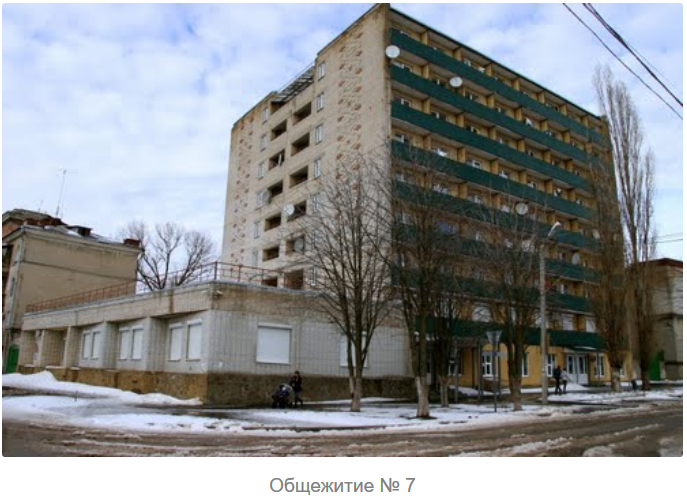

О Общежития ИТА ЮФУ
Инженерно-технологическая академия ЮФУ в своем распоряжений имеет 7 общежитий c общим количеством мест на 2 477 человек..
{kind=link}
- Пункт 1
- Подпункт 1.1
- Подпункт 1.2
- Пункт 2
- Подпункт 2.1
- Подпункт 2.2
1 (коридорный тип) Адрес г. Таганрог, Октябрьская площадь, 5. Количество мест: 296 мест
2 (коридорный тип) Адрес г. Таганрог, Добролюбовский, 15. Количество мест: 267 мест
3 (коридорный тип) Адрес г. Таганрог, ул. Александровская, 30. Количество мест: 333 места
4 (коридорный тип) Адрес г. Таганрог, Некрасовский, д. 19. Количество мест: 388 мест
5 (коридорный тип) Адрес г. Таганрог, Чехова, д. 22. Количество мест: 495 мест
6 (секционый тип) Адрес г. Таганрог, Петровская, д. 17-1. Количество мест: 320 мест.
7 (коридорный тип) Адрес г. Таганрог, пер. Тургеневский, 44-а. Количество мест: 378 места
В Этой статье будут рассмотрены основные положения и моменты связанные с заселение и проживание в общежитиях, вы всегда можете обратится за дополнительной информацией в Отдел жилищных программ и миграционного учета Департамента социальной и молодежной политики ЮФУ:
г. Ростов-на-Дону, ул. Зорге, 21, общежитие N9Б, к.111, тел. 8(863)218-40-00, доб.11526 - Александр Юрьевич, 10031 - Татьяна Николаевна; 14032 - Валерия Валерьевна.
г. Таганрог, Октябрьская площадь, 5, общежитие N1, тел 8(8634)68-30-76 Вера Ивановна/ Ольга Васильевна.
А также на сайте ЮФУ
Порядок заселения
Шаг первый: регистрация на сайте и подача заявки.
После выхода приказа о зачислении, необходимо зарегистрироваться в "Личном кабинете студента" на сайте ЮФУ в разделе "Студенту" → "Личный кабинет студента" и подать заявку на вселение в общежитие. Для обучающихся, зачисленных на программы магистратуры,сервис подачи заявок будет открыт с 8:00 25 августа до 24:00 часов 28 августа.
Шаг второй: заселение в общежитие.
Процедура заселения в общежитие , для студентов по программам бакалавриата, специалитета, магистратуры, аспирантуры будет осуществляться по адресам: г. Таганрог, Октябрьская площадь, 5, общежитие N1,Cогласно информации полученной студентами на их электронный адрес.
Необходимые материалы для заселения:
- паспорт;- 4 цветные фотографии размером 3х4;
- 4 копии паспорта (страница с фото и страница с регистрацией на одном листе);
- результат флюорографии и результат анализа кала на яйца глист или медицинская справка по форме 086у / 302н (педогагическое образование);
- Копия полиса обязательного медицинского страхования (для граждан РФ);
- правка из ОАО "Ростовгоргаз" по пользованию газовыми плитами (можно сделать по месту жительства жителям РО, остальным: г. Ростов-на-Дону, пр.Шолохова, 14, техкабинет), для общежитий секционного и коридорного типа.
- копия страхового свидетельства обязательного пенсионного страхования (СНИЛС) (для граждан РФ);
Шаг первый: регистрация на сайте и подача заявки.
Необходимые материалы для заселения:
При себе иметь следующие документы:
- КСЕРОКОПИЯ ПАСПОРТА СТУДЕНТА С ПОСТОЯНООЙ ПРОПИСКОЙ НА ОДНОМ ЛИСТЕ ; 2 ШТ.
- ЕСЛИ НЕТ 18 ЛЕТ, ДОПОЛНИТЕЛЬНО:
- КОПИЯ СВИДЕТЕЛЬСТВА О РОЖДЕНИИ ; 1 ШТ.
- КСЕРОКОПИЯ ПАСПОРТА ОДНОГО РОДИТЕЛЯ ;1 ШТ.
- ЕСЛИ ФАМИЛИИ РАЗНЫЕ, ТО КОПИЯ СВИДЕТЕЛЬСТВА О БРАКЕ РОДИТЕЛЯ ; 1 ШТ.
С представленным пакетом документов посетить кабинет паспортиста, который расположен по адресу: , ул. Зорге, 21, общежитие N 9Б, к.108; режим работы: понедельник, вторник, четверг, пятница, 8:30-17:00,
г. Таганрог, ул. Добролюбова, 15, общежитие N2, первый этаж; режим работы: понедельник ; пятница: 09:00; 17:00.
Для граждан ближнего зарубежья. Необходимо в течение 7-ми суток с момента заселения в общежитие встать на учет в миграционной службе г. Таганрог, ул. Петровская, 17, общежитие N6, к.106; режим работы: понедельник ; пятница: 09:00; 17:00.
Шаг четвертый: порядок оплаты
Оплата за проживание в общежитии производится в соответствии с договором найма и осуществляется 2 разав год в виде предварительной платы за 6 месяцев проживания. Оплата за первые 6 месяцев проживания производится не позднее 7 календарных дней с момента заключения договра найма.Каждые последующие 6 месяцев проживания оплачиваются не позднее 7 календарных дней до даты окончания текущего периода проживания.
Стоимость проживания
Стоимость проживания определяется типом общежития, а также формой обучения.
Что можно, а что нельзя
В общежитий и на прилегающих к нему территориях, запрещено курение и распитие алкогольных напитков, За несвоевременную оплату проживания и прочие нарушения общественного порядка( подробнее ниже) предусмотрена мера дисциплинарного взыскания ; отчисление из Южного федерального университета.
Пропускной режим на территории Кампуса ЮФУ регулируется Положением.
Проживающий обязан
- Изучить и выполнять Правила внутреннего распорядка в общежитиях (Правила)
- Выполнять все решения и распоряжения Администрации общежития.
- В период проживания организовать свой быт и досуг исключительно на основе принципа не нанесения какого либо вреда и неудобства окружающим и среде проживания, нести полную ответственность за все действия приглашенных лиц.
- Бережно пользоваться предоставленным ему помещением и находящимся в нем оборудованием, а также местами общего пользования, нести полную материальную ответственность за имущество, переданное ему в пользование.
- Своевременно вносить плату за общежитие, состоящую из платы за проживание и платы за дополнительные услуги.
- Сдавать коменданту общежития дубликат ключа от комнаты при вселении, а также в случае замены замка
Капрещено
- Хранение, употребление наркотических веществ, а также нахождение в наркотическом опьянении в общежитии. (штраф 5000 рублей, повторно 10000 рублей и выселение из общежития )
- Распитие спиртных напитков, а также нахождение в нетрезвом виде в общежитии..
- Нахождение в общежитии посторонних лиц после 22 часов. За всех посетителей несут полную ответственность жильцы соответствующих комнат. (пригласивший оплачивает 500 рублей в случае если гость остался на ночь).
- Курение в несанкционированных местах.Места для курения определяются администрацией и комендантом общежития.
- Чрезмерный шум в местах общего пользования, а также любой шум в комнатах, превосходящий слышимость в пределах комнаты. С 23 до 7 часов в общежитии должна соблюдаться полная тишина.
- Сдавать коменданту общежития дубликат ключа от комнаты при вселении, а также в случае замены замка
{kind=link}